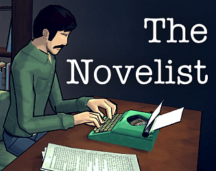

The Novelist
Detalhes
|  | |
| Tempo de jogo | Não Jogado |
| Última Atividade | Nunca |
| Adicionado | 04/04/2025 0:19:53 |
| Modificado | 04/04/2025 0:21:22 |
| Status de Conclusão | Not Played |
| Biblioteca | Itch.io |
| Fonte | itch.io |
| Plataforma | PC (Windows) |
| Data de Lançamento | 28/06/2015 |
| Pontuação da Comunidade | 71 |
| Avaliação da crítica | 59 |
| Pontuação do Usuário | |
| Gênero | Adventure Indie Simulator Strategy |
| Desenvolvedor | Orthogonal Games |
| Editor | |
| Funções | Single Player |
| Links | Official Steam Twitch |
| Tag | [GGDeals] Synced |
Descrição
The Novelist asks one central question: can you achieve your dreams without pushing away the people you love? The game focuses on Dan Kaplan, a novelist struggling to write the most important book of his career while trying to be the best husband and father he can be. The Kaplans have come to a remote coastal home for the summer, unaware that they're sharing the house with a mysterious ghostly presence: you.
Read the family's thoughts. Explore their memories. Uncover their desires and intervene in their lives. But stay out of sight; you can't help the Kaplans if they know there's a ghost in the house. It's up to you to decide how Dan's career and family life will evolve, but choose carefully; there are no easy answers, and every choice has a cost.
Dan's relationships – to his work, his wife, and his son – react and shift in response to your choices. With a different sequence of events in every playthrough, The Novelist gives life to a unique experience each time you play
The decisions you make will define the Kaplans' lives, but they may also tell you something about yourself.

"A quite remarkable simulation of family life" – 8/10 – Edge
"Sincere, realistic writing and an inspired approach to player choice" – Polygon
"The Novelist affected me, deeply … I frequently cried" – Rock Paper Shotgun
"Stands head and shoulders above all others … well-written and genuinely moving" - Indie Game of the Year – Continue Play